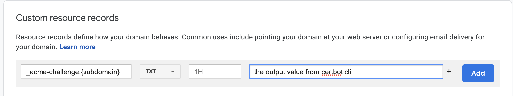

How to Generate Wildcard SSL Certificate using Let’s Encrypt/Certbot on CentOS#
Today I wanted to generate a wildcard SSL certificate for a service I was working on. Luckily, Let’s Encrypt’s ACME v2 production endpoint makes it so easy to generate wilcard certificates (for more details on this feature, see this post). Below are the steps I used to generate a wildcard certificate.
Note
This article describes the process for Centos 7/8 but can also be used for other Linux distros (with small changes in step 1). Also, {subdomain} and {domain} are placeholders. Remember to replace them with your own values. For instance, {subdomain}-> mycloud, and {domain} -> example.com
Step 1 — Installing the Certbot Let’s Encrypt Client#
$ sudo dfn install epel-release
$ sudo dfn install certbot
Note
This step assumes that you are using CentOS 7/8.
Step 2 — Obtaining a Wildcard Certificate#
$ sudo certbot certonly -d *.{subdomain}.{domain} \
> --manual \
> --preferred-challenges dns \
> --server https://acme-v02.api.letsencrypt.org/directory
The certbot prompts you for some personal information. Once everything is done, certbot provides a DNS TXT record to add to your DNS settings. At this point, head over to your DNS settings ( I was using google domains) and enter your TXT DNS record:

Note
{subdomain} and {domain} are placeholders. Remember to replace them with your own values. For instance, {subdomain}-> mycloud, and {domain} -> example.com
At this point,
Go back to your command line command (which should have been blocking after the DNS TXT record instructions).
Then Hit
Enter.
Cerbot will retrieve your DNS records to verify that the entries are correct. If the verification is successful, you get following output:
Before continuing, verify the record is deployed.
- - - - - - - - - - - - - - - - - - - - - - - - - - - - - - - - - - - - - - - -
Press Enter to Continue
Waiting for verification...
Cleaning up challenges
IMPORTANT NOTES:
- Congratulations! Your certificate and chain have been saved at:
/etc/letsencrypt/live/mycloud.example.com/fullchain.pem
Your key file has been saved at:
/etc/letsencrypt/live/mycloud.example.com/privkey.pem
Your certificate will expire on 2021-05-28. To obtain a new or
tweaked version of this certificate in the future, simply run
certbot again. To non-interactively renew *all* of your
certificates, run "certbot renew"
- If you like Certbot, please consider supporting our work by:
Donating to ISRG / Let's Encrypt: https://letsencrypt.org/donate
Donating to EFF: https://eff.org/donate-le
Step 3 — Testing the Certificate and SSL Configuration#
At this point, you can ensure that Certbot created your SSL certificate correctly by using the SSL Server Test from the cloud security company Qualys.
Open your browser, and point it to the following link, replacing mycloud.example.com with your domain:
https://www.ssllabs.com/ssltest/analyze.html?d=mycloud.example.com
Voil√† üéâüéâüéâüéâ!